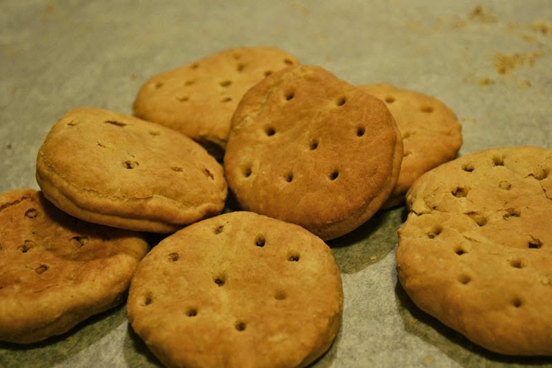

Roman Soldier Bucellatum

Description
Bucellatum was a Roman hardtack biscuit eaten by Roman soliders. It is created by mixing flour, salt, and water.
Hardtack, as the name suggests, is very hard, but was a sustainable and portable source of nutrition for roman soldiers.
Ingredients:
- 2 3/4 cups wholewheat flour
- 1/3 cup water
- 1 tsp salt
- 2 tsp butter
Step-by-Step Instructions
- Mix flour, salt and butter. Then add water, whisking in the process to create a whipped dough
(the biscuit must be very dry finally)
- Roll out the dough and squeeze round (sources say Roman rusks were round).
- Make holes in the dough allowing air to come in and out of moisture.
- Place the cakes on a tray and place in the oven preheated to 250℃.
- Bake rusks for 2.5 hours, shifting them.
- Leave the cakes in the oven for a few hours to cool. If the rusks are not completely dry,
bake until the expected result.